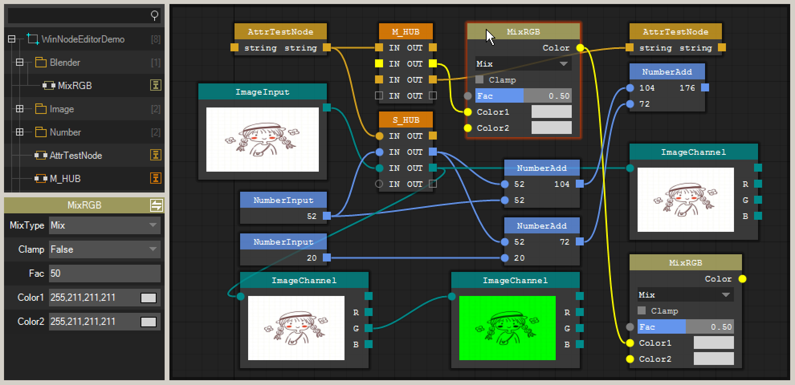
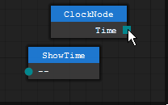
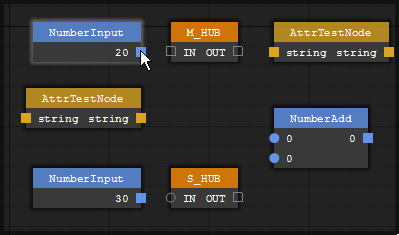
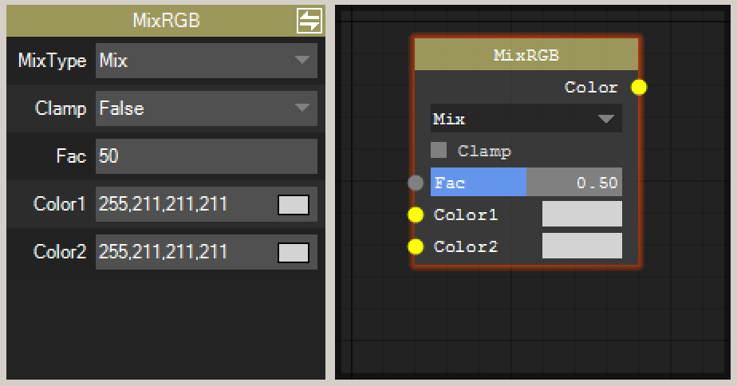
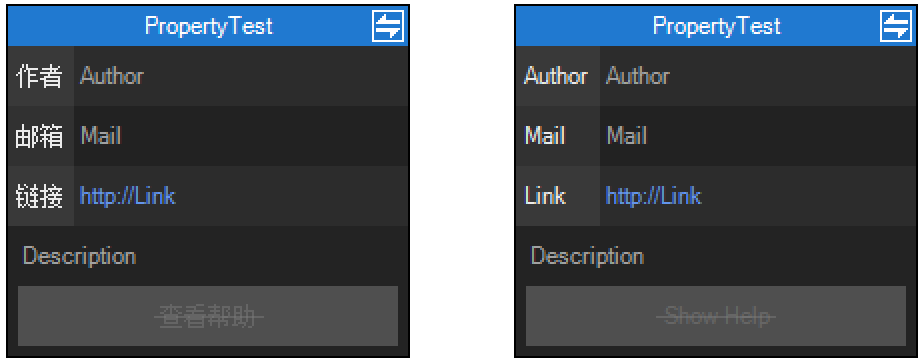
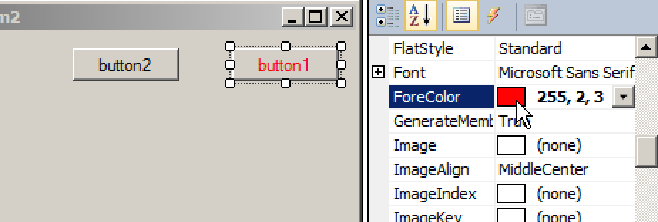
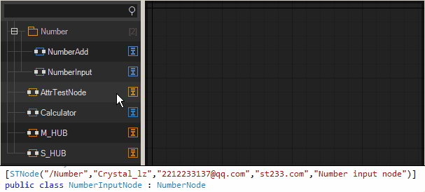

前言
简介
那是一个冬季 在研究无线电安全的作者接触到了GNURadio 那是作者第一次接触到节点编辑器
-> What? Excuse me... What"s this?.. 这是什么鬼东西?...
那是一个春季 不知道为什么 过完年整个世界都变了 大家被迫窝在家里 无聊至极的作者学起了Blender那是作者第二次接触到节点编辑器
-> Wo...原来这东西可以这么玩...真方便
于是一些想法在作者脑中逐渐诞生 让作者有了想做一个这样的东西的想法
那是一个夏季 不知道为什么 作者又玩起了Davinci那是作者第三次接触到节点编辑器 这一次的接触让作者对节点编辑器的好感倍增 作者瞬间觉得 只要是可以模块化流程化的功能 万物皆可节点化
所以STNodeEditor就诞生了
[基础]STNode
STNode是整个框架的核心 如果把STNodeEditor视为Desktop 那么一个STNode就可以视为桌面上的一个应用程序 开发一个健壮的STNode是非常有必要的事情
创建节点
节点的基类STNode被abstract修饰 无法直接创建节点 所以节点必须继承至STNode
STNode包含了大量的virtual函数可供开发者重写 对于详细的函数列表请参考API文档
using ST.Library.UI.NodeEditor; namespace WinNodeEditorDemo { public class MyNode : STNode { public MyNode() { //与OnCreate()等效 this.Title = "TestNode"; } //protected override void OnCreate() { // base.OnCreate(); //} } } //添加到STNodeEditor中 stNodeEditor1.Nodes.Add(new MyNode());

会发现只看到一个标题什么都没有 因为并没有为它添加输入输出选项 所以重新修改代码
public class MyNode : STNode { protected override void OnCreate() { base.OnCreate(); this.Title = "TestNode"; //此添加方式会得到添加成功后的 STNodeOption 索引位置 int nIndex = this.InputOptions.Add(new STNodeOption("IN_1", typeof(string), false)); //此添加方式能直接得到一个构建的 STNodeOption STNodeOption op = this.InputOptions.Add("IN_2", typeof(int), true); this.OutputOptions.Add("OUT", typeof(string), false); } }
这样节点上就会出现所添加的选项 但是这样还不够 可以看到一共有两个数据类型string和int应该给数据类型赋予颜色信息 来区分不同的数据类型
public class MyNode : STNode { protected override void OnCreate() { base.OnCreate(); this.Title = "TestNode"; int nIndex = this.InputOptions.Add(new STNodeOption("IN_1", typeof(string), false)); STNodeOption op = this.InputOptions.Add("IN_2", typeof(int), true); //this.SetOptionDotColor(op, Color.Red); 优先级最高 如果被设置 会忽略容器中的颜色信息 this.OutputOptions.Add("OUT", typeof(string), false); } //当所属容器发生变化时候发生 应当向容器提交自己数据类型期望显示的颜色 protected override void OnOwnerChanged() { base.OnOwnerChanged(); if (this.Owner == null) return; this.Owner.SetTypeColor(typeof(string), Color.Yellow); //此添加方式 会替换容器中已有的类型颜色信息 this.Owner.SetTypeColor(typeof(int), Color.DodgerBlue, true); } }
这样一个节点就创建完成了 但是这个节点目前不具备任何的功能 接下来的案例中将逐步添加功能
无论如何开发者都应该尽量为扩展的STNode保留一个空参数构造器 不然在很多功能使用会存在不必要的麻烦
STNodeOption
由上面的案例可知STNodeOption是STNode的连接选项 连接选项可以是多连接和单连接模式
public class MyNode : STNode { protected override void OnCreate() { base.OnCreate(); this.Title = "MyNode"; this.TitleColor = Color.FromArgb(200, Color.Goldenrod); //单连接选项 this.InputOptions.Add("Single", typeof(string), true); //多连接选项 this.OutputOptions.Add("Multi", typeof(string), false); } }
在多连接模式下 一个选项可以被同数据类型的多个选项连接 以方形绘制
在单连接模式下 一个选项仅可被同数据类型的一个选项连接 以圆形绘制
STNodeOption.Empty
STNodeOption.Empty是一个静态属性 添加到STNode中仅用于在自动布局时候占位使用 不参与绘制与事件触发
public class MyNode : STNode { protected override void OnCreate() { base.OnCreate(); this.Title = "MyNode"; this.TitleColor = Color.FromArgb(200, Color.Goldenrod); this.InputOptions.Add(STNodeOption.Empty); this.InputOptions.Add("IN_1", typeof(string), false); this.InputOptions.Add("IN_2", typeof(string), false); this.OutputOptions.Add("OUT_1", typeof(string), false); this.OutputOptions.Add(STNodeOption.Empty); this.OutputOptions.Add(STNodeOption.Empty); this.OutputOptions.Add("OUT_2", typeof(string), false); } }
每一个STNodeOption的高度由STNode.ItemHeight(protected)决定
STNode.AutoSize
AutoSize默认为true 在此状态下节点的WidthHeight等属性无法被设置
public class MyNode : STNode { protected override void OnCreate() { base.OnCreate(); this.Title = "MyNode"; this.TitleColor = Color.FromArgb(200, Color.Goldenrod); this.InputOptions.Add("IN", typeof(string), false); this.OutputOptions.Add("OUT", typeof(string), false); //需要先设置AutoSize=false 才能设置STNode大小 this.AutoSize = false; this.Size = new Size(100, 100); } }
可以看到MyNode的大小不再自动计算 可STNodeOption的位置依旧会进行自动计算 如果想修改STNodeOption的位置可以重写OnSetOptionXXX
public class MyNode : STNode { private STNodeOption m_op_in; private STNodeOption m_op_out; protected override void OnCreate() { base.OnCreate(); this.Title = "MyNode"; this.TitleColor = Color.FromArgb(200, Color.Goldenrod); m_op_in = this.InputOptions.Add("IN", typeof(string), false); m_op_out = this.OutputOptions.Add("OUT", typeof(string), false); //需要先设置AutoSize=false 才能设置STNode大小 this.AutoSize = false; this.Size = new Size(100, 100); } //无论AutoSize为何值 都可以对选项连接点位置进行修改 protected override Point OnSetOptionDotLocation(STNodeOption op, Point pt, int nIndex) { if (op == m_op_in) return new Point(pt.X, pt.Y + 20); return base.OnSetOptionDotLocation(op, pt, nIndex); } //无论AutoSize为何值 都可以对选项文本显示区区域进行修改 protected override Rectangle OnSetOptionTextRectangle(STNodeOption op, Rectangle rect, int nIndex) { if (op == m_op_out) return new Rectangle(rect.X, rect.Y + 20, rect.Width, rect.Height); return base.OnSetOptionTextRectangle(op, rect, nIndex); } }
可以看到代码中修改STNodeOption连线的点和文本区域是通过重写函数去修改的 为什么不设计成STNodeOption.DotLeft=xxx的方式是因为作者认为这样反而会更加的麻烦
重写函数中所传入的ptrect都是自动计算过后的数据 这样开发者在修改位置的时候会有一定的参照 如果通过STNodeOption.DotLeft=xxx这样的方式 那么开发者无法得到一个参照位置需要全部自己计算
而且还需要绑定STNode.Resize等事件来监听STNode大小的变化来重新计算位置 所以相比之下OnSetOptionXXX的方式反而相对没那么繁琐
目前为止出现的所有案例都不具备数据的传递与接收 在接下来的案例中将开始添加功能
案例 - ClockNode
STNodeOption通过对DataTransfer事件的绑定可以获取到此选项的所有数据输入
STNodeOption.TransferData(object)函数可以向此选项上的所有连线传递数据
接下来实现一个具备一定功能的节点 目前而言能想到的最好的实现就是定义一个时钟节点
因为目前介绍到的内容还不足以能够自由的向节点提供任意数据 所以需要一个能自己产生数据的节点
该节点每秒钟向外输出一次当前系统时间
public class ClockNode : STNode { private Thread m_thread; private STNodeOption m_op_out_time; protected override void OnCreate() { base.OnCreate(); this.Title = "ClockNode"; m_op_out_time = this.OutputOptions.Add("Time", typeof(DateTime), false); } //当所属容器发生变化时候发生 protected override void OnOwnerChanged() { base.OnOwnerChanged(); if (this.Owner == null) { //当容器被置空时停止线程 if (m_thread != null) m_thread.Abort(); return; } this.Owner.SetTypeColor(typeof(DateTime), Color.DarkCyan); m_thread = new Thread(() => { while (true) { Thread.Sleep(1000); //STNodeOption.TransferData(object) 会自动的向选项上所有连接投递数据 //STNodeOption.TransferData(object) 会自动设置STNodeOption.Data m_op_out_time.TransferData(DateTime.Now); //与WinForm一样 在线程中如果需要跨UI线程操作 节点提供了 Begin/Invoke() 可完成对应操作 //this.BeginInvoke(new MethodInvoker(() => m_op_out_time.TransferData(DateTime.Now))); } }) { IsBackground = true }; m_thread.Start(); } }
当然上面的节点我们可以直接显示时间 但是为了演示数据的传递 还需要一个作为接受数据的节点
public class ShowClockNode : STNode { private STNodeOption m_op_time_in; protected override void OnCreate() { base.OnCreate(); this.Title = "ShowTime"; //由于此节点仅能显示一个时间 选项应当采用"单连接"模式 仅接受一个时间数据 m_op_time_in = this.InputOptions.Add("--", typeof(DateTime), true); //监听事件 当有数据被传输到m_op_time_in时 会触发此事件 m_op_time_in.DataTransfer += new STNodeOptionEventHandler(op_DataTransfer); } void op_DataTransfer(object sender, STNodeOptionEventArgs e) { //不仅仅是有数据传入时才会触发此事件 当有连接或断开时 同样触发此事件 所以需要判断连接状态 if (e.Status != ConnectionStatus.Connected || e.TargetOption.Data == null) { //当STNode.AutoSize=true时 并不建议使用STNode.SetOptionText //因为在AutoSize下Text每发生一次变化STNode就会重新计算一次布局 应当通过添加控件方式来显示 //由于当前还并未讲解到STNodeControl 所以这里暂时先采用当前设计 this.SetOptionText(m_op_time_in, "--"); } else { this.SetOptionText(m_op_time_in, ((DateTime)e.TargetOption.Data).ToString()); } } }
添加到STNodeEditor中的效果如下
可以看到ShowClockNode每秒都在刷新时间 同样通过上面代码可以看到ShowClockNode并没有重写OnOwnerChanged()函数向容器添加数据类型颜色信息
如果先把ShowClockNode添加到STNodeEditor中会发现节点选项确实没有颜色 但若ClockNode被添加时候 会发现ShowClockNode的选项立马就有了颜色
因为ClockNode在添加的时候 向容器提交了数据类型的颜色 而ShowClockNode选项的数据类型和ClockNode一样 所以自然在绘制的时候具备了颜色数据
STNode.SetOptionXXX
在上面和之前的案例中可以看到需要修改STNodeOption一些属性的时候并不是STNodeOption.XXX=XXX方式去修改的 之所以这样设计是为了处于安全考虑
作者认为一个STNodeOption只能被它的所有者所修改 而STNodeOption.XXX=XXX的方式无法确定是被谁修改的 而STNode.SetOptionXXX()被protected所标记只能在内部被调用且在函数内部会判断STNodeOption.Owner是否是当前类 以确保安全
关于数据传递
并不是一定要STNodeOption.TransferData(object)才能向下面的选项传递数据TransferData(object)仅仅是主动向下更新数据
当一个新的连接刚被建立的时候 会被动传递一次数据 下面将ClockNode的代码修改一下
public class ClockNode : STNode { private Thread m_thread; private STNodeOption m_op_out_time; protected override void OnCreate() { base.OnCreate(); this.Title = "ClockNode"; m_op_out_time = this.OutputOptions.Add("Time", typeof(DateTime), false); //对选项的数据赋值 m_op_out_time.Data = DateTime.Now; } }
可以看到ShowClockNode依然显示了时间 只是数据不再变化 因为在建立连接的同时也会触发DataTransfer事件 在事件中ShowClockNode通过e.TargetOption.Data获取到了ClockNode选项的数据
当一个连接被建立与断开时事件触发顺序如下
Connecting-Connected-DataTransfer | DisConnecting-DataTransfer-DisConnected
STNodeHub

STNodeHub是一个内置的节点 其主要作用分线 可以将一个输出分散到多个输入或多个输出集中到一个输入点上以避免重复布线 也可在节点布线复杂时用于绕线
[基础]STNodeControl
STNodeControl作为STNode控件的基类 有着许多与System.Windows.Forms.Control同名的属性及事件 使得开发者可以像开发WinForm程序一样去开发一个节点
在此版本(2.0)中 并没有提供任何一个可用控件 仅STNodeControl基类 需开发者继承进行扩展 若后期有空作者再来完善
添加一个控件
与System.Windows.Forms.Control一样 STNode拥有Controls集合 其数据类型为STNodeControl
public class MyNode : STNode { protected override void OnCreate() { base.OnCreate(); this.Title = "MyNode"; this.TitleColor = Color.FromArgb(200, Color.Goldenrod); //需要先设置AutoSize=false 才能设置STNode大小 this.AutoSize = false; this.Size = new Size(100, 100); var ctrl = new STNodeControl(); ctrl.Text = "Button"; ctrl.Location = new Point(10, 10); this.Controls.Add(ctrl); ctrl.MouseClick += new MouseEventHandler(ctrl_MouseClick); } void ctrl_MouseClick(object sender, MouseEventArgs e) { MessageBox.Show("MouseClick"); } }
可以看到与开发WinForm程序几乎没有任何区别 唯一不同的是STNode暂时还不提供所见即所得的UI设计器
自定义一个 Button
虽然上面的代码看起来像是添加了一个按钮控件 事实上那仅仅是STNodeControl的默认绘制样式
下面来自定义一个Button控件 具备鼠标悬停和点击效果 使其更加像一个按钮
public class STNodeButton : STNodeControl { private bool m_b_enter; private bool m_b_down; protected override void OnMouseEnter(EventArgs e) { base.OnMouseEnter(e); m_b_enter = true; this.Invalidate(); } protected override void OnMouseLeave(EventArgs e) { base.OnMouseLeave(e); m_b_enter = false; this.Invalidate(); } protected override void OnMouseDown(MouseEventArgs e) { base.OnMouseDown(e); m_b_down = true; this.Invalidate(); } protected override void OnMouseUp(MouseEventArgs e) { base.OnMouseUp(e); m_b_down = false; this.Invalidate(); } protected override void OnPaint(DrawingTools dt) { //base.OnPaint(dt); Graphics g = dt.Graphics; SolidBrush brush = dt.SolidBrush; brush.Color = base.BackColor; if (m_b_down) brush.Color = Color.SkyBlue; else if (m_b_enter) brush.Color = Color.DodgerBlue; g.FillRectangle(brush, 0, 0, this.Width, this.Height); g.DrawString(this.Text, this.Font, Brushes.White, this.ClientRectangle, base.m_sf); } }
当然为了代码尽可能的简洁 按钮的效果写死在了代码中 上面的代码仅仅是演示如何去构建一个自定义控件 当然在这之前你需要具备一些GDI相关的知识
<GDI+程序设计>是一本不错的树
案例 - 图像信息获取
在上述的ClockNode案例中 对于数据的数据是通过代码写死在节点中的 接下来这个案例通过上面编写的STNodeButton来获取数据进行输出
public class ImageShowNode : STNode { private STNodeOption m_op_out; protected override void OnCreate() { base.OnCreate(); this.Title = "ImageShowNode"; this.TitleColor = Color.FromArgb(200, Color.Goldenrod); this.AutoSize = false; this.Size = new Size(160, 150); m_op_out = this.OutputOptions.Add("", typeof(Image), false); var ctrl = new STNodeButton(); ctrl.Text = "Open Image"; ctrl.Location = new Point(5, 0); ctrl.Size = new Size(150, 20); this.Controls.Add(ctrl); ctrl.MouseClick += new MouseEventHandler(ctrl_MouseClick); } void ctrl_MouseClick(object sender, MouseEventArgs e) { OpenFileDialog ofd = new OpenFileDialog(); ofd.Filter = "*.png|*.png|*.jpg|*.jpg"; if (ofd.ShowDialog() != DialogResult.OK) return; m_op_out.TransferData(Image.FromFile(ofd.FileName), true); this.Invalidate(); } protected override void OnDrawBody(DrawingTools dt) { base.OnDrawBody(dt);//当然用户可以通过扩展"STNodeControl"编写一个"STNodePictureBox"控件来显示图片 Graphics g = dt.Graphics; Rectangle rect = new Rectangle(this.Left + 5, this.Top + this.TitleHeight + 20, 150, 105); g.FillRectangle(Brushes.Gray, rect); if (m_op_out.Data != null) g.DrawImage((Image)m_op_out.Data, rect); } }
接下来需要一个数据接收节点 比如获取图像大小
public class ImageSizeNode : STNode { private STNodeOption m_op_in; protected override void OnCreate() { base.OnCreate(); this.Title = "ImageSize"; this.TitleColor = Color.FromArgb(200, Color.Goldenrod); m_op_in = this.InputOptions.Add("--", typeof(Image), true); m_op_in.DataTransfer += new STNodeOptionEventHandler(m_op_in_DataTransfer); } void m_op_in_DataTransfer(object sender, STNodeOptionEventArgs e) { if (e.Status != ConnectionStatus.Connected || e.TargetOption.Data == null) { this.SetOptionText(m_op_in, "--"); } else { Image img = (Image)e.TargetOption.Data; this.SetOptionText(m_op_in, "W:" + img.Width + " H:" + img.Height); } } }
通过点击Open Image按钮可以选择一张图片并在节点中显示 在ImageSizeNode连接后 就获取到了图像的大小
在上图中ImageChannel节点代码这里并没有给出 代码在WinNodeEditorDemo工程中 其作用为提取一张图像的RGB通道 对于ImageShowNode而言它仅仅是提供了数据源并显示 对于ImageSizeNode和ImageChannel节点而言 它们并不知道会被什么节点连接 它们仅仅是完成了各自的功能并将结果传递给了输出选项 等待被下一个节点连接
而对于执行逻辑完全是由用户布线将它们的功能串在了一起 开发期间节点与节点之间没有任何的交互 唯一将它们牵扯在一起的是一个Image的数据类型 这样一来节点与节点之间几乎不存在耦合关系
[基础]STNodeEditor
STNodeEditor作为STNode的容器 同样提供了大量的属性与事件供开发者使用 关于STNodeEditor更为详细的API列表 请参考帮助文档
保存画布
对于STNodeEditor中的节点以及连线的关系是可以文件持久化保存的
通过STNodeEditor.SaveCanvas(string strFileName)函数可以将画布中的内容持久化保存
需要注意的是SaveCanvas()系列函数会调用internal byte[] STNode.GetSaveData()函数来获取每个节点的二进制数据
而GetSaveData()函数并非将节点自身序列化 GetSaveData()函数会将节点自身的基础数据及原始属性进行二进制化 然后调用virtual OnSaveNode(Dictionary<string, byte[]> dic)向扩展节点索要节点需要保存的数据
所以若有保存需求 节点开发者可能需要通过重写OnSaveNode()函数 来确保一些需要的数据能够被保存
关于更多节点保存的内容将会在后面的内容中介绍
加载画布
通过STNodeEditor.LoadCanvas(string strFileName)函数可以从文件中加载保存的数据
若STNodeEditor存在其他程序集中的节点 则需要通过调用STNodeEditor.LoadAssembly(string strFile)来加载程序集以确保文件中的节点能够被正确还原
因为还原过程并非序列化 而是通过(STNode)Activator.CreateInstance(stNodeType)方式动态创建一个节点然后调用virtual OnSaveNode(Dictionary<string, byte[]> dic)对数据进行还原 而dic则为OnSaveNode()所保存的数据
因为还原节点是通过反射动态创建节点的 所以扩展的STNode中必须提供空参数构造器
关于更多节点加载的内容将会在后面的内容中介绍
常用事件
ActiveChanged,SelectedChanged 可以监控控件中节点被选中的变化情况
stNodeEditor1.ActiveChanged += (s, e) => Console.WriteLine(stNodeEditor1.ActiveNode.Title); stNodeEditor1.SelectedChanged += (s, e) => { foreach(var n in stNodeEditor1.GetSelectedNode()){ Console.WriteLine(n.Title); } };
如果希望在画布每次缩放后在编辑器上提示缩放比可以通过CanvasScaled事件获取
stNodeEditor1.CanvasScaled += (s, e) => {
stNodeEditor1.ShowAlert(stNodeEditor1.CanvasScale.ToString("F2"),
Color.White, Color.FromArgb(127, 255, 255, 0));
};
如果希望画布中有节点连线时 提示连线状态可以通过OptionConnected事件获取状态
stNodeEditor1.OptionConnected += (s, e) => {
stNodeEditor1.ShowAlert(e.Status.ToString(), Color.White,
Color.FromArgb(125, e.Status ConnectionStatus.Connected ? Color.Lime : Color.Red));
};
常用方法
/// <summary> /// 移动画布原点坐标到指定的控件坐标位置 (当不存在 Node 时候 无法移动) /// </summary> /// <param name="x">X 坐标</param> /// <param name="y">Y 坐标</param> /// <param name="bAnimation">移动过程中是否启动动画效果</param> /// <param name="ma">指定需要修改的坐标参数</param> public void MoveCanvas(float x, float y, bool bAnimation, CanvasMoveArgs ma);
/// <summary> /// 缩放画布(当不存在 Node 时候 无法缩放) /// </summary> /// <param name="f">缩放比例</param> /// <param name="x">缩放中心X位于控件上的坐标</param> /// <param name="y">缩放中心Y位于控件上的坐标</param> public void ScaleCanvas(float f, float x, float y);
/// <summary> /// 向编辑器中添加默认数据类型颜色 /// </summary> /// <param name="t">数据类型</param> /// <param name="clr">对应颜色</param> /// <param name="bReplace">若已经存在是否替换颜色</param> /// <returns>被设置后的颜色</returns> public Color SetTypeColor(Type t, Color clr, bool bReplace);
/// <summary> /// 在画布中显示提示信息 /// </summary> /// <param name="strText">要显示的信息</param> /// <param name="foreColor">信息前景色</param> /// <param name="backColor">信息背景色</param> /// <param name="nTime">信息持续时间</param> /// <param name="al">信息要显示的位置</param> /// <param name="bRedraw">是否立即重绘</param> void ShowAlert(string strText, Color foreColor, Color backColor, int nTime, AlertLocation al, bool bRedraw); //e.g. stNodeEditor1.ShowAlert("this is test info", Color.White, Color.FromArgb(200, Color.Yellow));
关于STNodeEditor更多的属性函数事件请参考API文档 此文档更注重于与STNode相关的内容及演示
STNodePropertyGrid
STNodePropertyGrid是随着类库一起发布的另一个控件 可以与STNodeEditor结合使用
STNodePropertyGrid一共有两个面板 通过右上角的按钮可以进行切换 分别是属性面板与节点信息面板
仅存在属性与节点信息才会显示对应面板
如何使用
STNodePropertyGrid的核心方法为SetNode(STNode)通常与STNodeEditor绑定使用
stNodeEditor1.ActiveChanged += (s, e) => stNodePropertyGrid1.SetNode(stNodeEditor1.ActiveNode);
既然叫做属性编辑器必然和STNode的属性相关 STNode作为一个普通的class当然也可以是拥有属性的 而STNodePropertyGrid就是展示并修改它们 就像在WinForm开发时候UI设计器中所看到的一样
接下来编写一个节点试一下
public class PropertyTestNode : STNode { private int _Number; public int Number { get { return _Number; } set { _Number = value; } } protected override void OnCreate() { base.OnCreate(); this.Title = "PropertyTest"; } }
发现并没有看到想象中的画面 并没有显示Number属性
与System.Windows.Forms.PropertyGrid不同的是PropertyGrid会显示class中的所有属性 而STNodePropertyGrid并没有采用这样的设计方案
S T N O D E PropertyGrid 这个是STNodePropertyGrid并不会随便的显示一个属性 因为作者认为开发者可能并不希望STNode中的所有属性都被显示出来 即使需要显示出来开发者可能也并不希望在属性窗口看到的是Number而是一个别的名字 毕竟Number是写代码时候用的
只有被STNodePropertyAttribute特性所标记的属性才会被STNodePropertyGrid显示
STNodePropertyAttribute
STNodePropertyAttribute拥有三个属性NameDescriptionDescriptorType
Name - 对于此属性希望在STNodePropertyGrid上显示的名称
Description - 当鼠标左键在STNodePropertyGrid上长按属性名称时候希望显示的描述信息
DescriptorType - 决定属性如何与属性窗口进行数据交互 将在稍后讲解此属性
STNodePropertyAttribute构造函数为STNodePropertyAttribute(string strName,string strDescription)
public class PropertyTestNode : STNode { private int _Number; [STNodeProperty("Name", "Description for this property")] public int Number { get { return _Number; } set { _Number = value; } } protected override void OnCreate() { base.OnCreate(); this.Title = "PropertyTest"; } }
此时就能看到属性被正确的显示了 并且可以被设置 而且左键长按属性名称会显示描述信息
STNodeAttribute
若希望显示节点信息 则STNode需要被STNodeAttribute特性标记
[STNode("AA/BB", "Author", "Mail", "Link", "Description")] public class PropertyTestNode : STNode { private int _Number; [STNodeProperty("Name", "Description for this property")] public int Number { get { return _Number; } set { _Number = value; } } protected override void OnCreate() { base.OnCreate(); this.Title = "PropertyTest"; } }
通过右上角的按钮可进行面板切换
其中AA/BB用于在STNodeTreeView中构建路径使用
stNodePropertyGrid1.SetInfoKey("Author", "Mail", "Link", "Show Help");
信息面板内容的key可通过SetInfoKey()函数来设置语言 默认简体中文显示
查看帮助
上面一个信息面板案例中可以看到查看帮助按钮不可用 若希望可用则需要提供魔术方法
[STNode("AA/BB", "Author", "Mail", "Link", "Description")] public class PropertyTestNode : STNode { private int _Number; [STNodeProperty("Name", "Description for this property")] public int Number { get { return _Number; } set { _Number = value; } } protected override void OnCreate() { base.OnCreate(); this.Title = "PropertyTest"; } /// <summary> /// 此方法为魔术方法 /// 若存在 static void ShowHelpInfo(string) 且此类被STNodeAttribute标记 /// 则此方法将作为属性编辑器上 查看帮助 功能 /// </summary> /// <param name="strFileName">此类所在的模块所在的文件路径</param> public static void ShowHelpInfo(string strFileName) { MessageBox.Show("this is -> ShowHelpInfo(string);\r\n" + strFileName); } }
此时发现查看帮助按钮变成了启用状态 STNodeAttribute还提供了两个static函数
/// <summary> /// 获取类型的帮助函数 /// </summary> /// <param name="stNodeType">节点类型</param> /// <returns>函数信息</returns> public static MethodInfo GetHelpMethod(Type stNodeType); /// <summary> /// 执行对应节点类型的帮助函数 /// </summary> /// <param name="stNodeType">节点类型</param> public static void ShowHelp(Type stNodeType);
案例 - 两数相加
既然STNodePropertyGrid可以显示并修改属性 那么接下来这个案例将通过属性窗口来提供一个数据的输入
public class NumberInputNode : STNode { private int _Number; [STNodeProperty("Input", "Input number")] public int Number { get { return _Number; } set { _Number = value; this.SetOptionText(m_op_out, value.ToString()); m_op_out.TransferData(value); } } private STNodeOption m_op_out; protected override void OnCreate() { base.OnCreate(); this.Title = "NumberInput"; m_op_out = this.OutputOptions.Add("0", typeof(int), false); } }
public class NumberAddNode : STNode { private STNodeOption m_op_in_1; private STNodeOption m_op_in_2; private STNodeOption m_op_out; protected override void OnCreate() { base.OnCreate(); this.Title = "NumberAdd"; m_op_in_1 = this.InputOptions.Add("0", typeof(int), true); m_op_in_2 = this.InputOptions.Add("0", typeof(int), true); m_op_out = this.OutputOptions.Add("0", typeof(int), false); m_op_in_1.DataTransfer += new STNodeOptionEventHandler(m_op_in_DataTransfer); m_op_in_2.DataTransfer += new STNodeOptionEventHandler(m_op_in_DataTransfer); } void m_op_in_DataTransfer(object sender, STNodeOptionEventArgs e) { if (e.Status != ConnectionStatus.Connected || e.TargetOption == null) { if (sender == m_op_in_1) m_op_in_1.Data = 0; if (sender == m_op_in_2) m_op_in_2.Data = 0; } else { if (sender == m_op_in_1) m_op_in_1.Data = e.TargetOption.Data; if (sender == m_op_in_2) m_op_in_2.Data = e.TargetOption.Data; } if (m_op_in_1.Data == null) m_op_in_1.Data = 0; if (m_op_in_2.Data == null) m_op_in_2.Data = 0; int nResult = (int)m_op_in_1.Data + (int)m_op_in_2.Data; this.SetOptionText(m_op_in_1, m_op_in_1.Data.ToString()); this.SetOptionText(m_op_in_2, m_op_in_2.Data.ToString()); this.SetOptionText(m_op_out, nResult.ToString()); m_op_out.TransferData(nResult); } }
通过Number属性的set访问器将输入的数字向下传递
ReadOnlyModel
某些情况下并不希望STNodePropertyGrid对属性进行设置 仅仅希望展示属性 则可以启用ReadOnlyModel
stNodePropertyGrid1.ReadOnlyModel = true;
在ReadOnlyModel下 属性无法通过STNodePropertyGrid被设置
STNodePropertyDescriptor
上面介绍了STNodePropertyAttribute的Name和Description属性 还有第三个属性DescriptorType其数据类型为Type 默认值为typeof(STNodePropertyDescriptor)
虽然从目前的案例来看 上面的操作没有任何问题 但是并不是所有数据类型的属性都能够正确的被STNodePropertyGrid所支持 默认的STNodePropertyDescriptor仅支持下列数据类型
intfloatdoubleboolstringEnum以及它们的Array
失败案例 - ColorTestNode
下面创建一个节点添加一个Color类型的属性
public class ColorTestNode : STNode { [STNodeProperty("TitleColor", "Get or set the node TitleColor")] public Color ColorTest { get { return this.TitleColor; } set { this.TitleColor = value; } } protected override void OnCreate() { base.OnCreate(); this.Title = "ColorNode"; } }

运行上述代码 会发现通过STNodePropertyGrid对属性进行进行设置会出现错误 而且STNodePropertyGrid中对于属性的值显示也很奇怪
即便System.Windows.Forms.PropertyGrid能支持很多数据类型 但也并非万能 比如当属性类型是用户自定义类型时候属性编辑器根本无法知道要如何与图形化界面上的属性交互
对于System.Windows.Forms.PropertyGrid的解决方案便是提供TypeConverter将目标类型用TypeConverter标记并实现重写 这样一来PropertyGrid通过TypeConverter就能够知道如何与图形化界面进行交互
而STNodePropertyGrid提供的解决方案便是STNodePropertyDescriptor
关于属性描述器
之所以STNodePropertyGrid能够正确的获取以及修改STNode属性的值 全是依靠STNodePropertyDescriptor在中间做交互 进行数据的转换以及响应属性窗口上的一些行为操作
被STNodePropertyAttribute标记的属性都会包装成STNodePropertyDescriptor传递给STNodePropertyGrid 一个STNodePropertyDescriptor包含了STNodePropertyAttribute中的NameDescription以及属性将会在STNodePropertyGrid上显示的位置信息等 以及如何响应鼠标事件或键盘事件等
可以理解为STNodePropertyDescriptor是每个被STNodePropertyAttribute所标记属性的图形化界面接口 而主要作用则为在图形界面和真实属性之间传递数据
GetValueFromString()
/// <summary> /// 将字符串形式的属性值转换为属性目标类型的值 /// 默认只支持 int float double string bool 以及上述类型的Array /// 若目标类型不在上述中 请重写此函数自行转换 /// </summary> /// <param name="strText">字符串形式的属性值</param> /// <returns>属性真实目标类型的值</returns> protected internal virtual object GetValueFromString(string strText);
GetValueFromString()函数主要负责将用户在STNodePropertyGrid中输入字符串转换为对应属性需要的真实值
如: 假若属性是int类型值 而用户在STNodePropertyGrid中只能输入字符串的123那么默认的GetValueFromString()函数内部则会int.Parse(strText)这样string类型的123就变成了int类型的123
GetStringFromValue()
/// <summary> /// 将属性目标类型的值转换为字符串形式的值 /// 默认对类型值进行 ToString() 操作 /// 如需特殊处理 请重写此函数自行转换 /// </summary> /// <returns>属性值的字符串形式</returns> protected internal virtual string GetStringFromValue();
GetStringFromValue()函数主要负责将属性值转换为字符串的方式在STNodePropertyGrid中显示 默认的GetStringFromValue()内部仅仅是对属性的值ToString()操作
成功案例 - ColorTestNode
对上面失败案例的ColorTestNode.ColorTest的STNodePropertyDescriptor进行扩展
public class ColorTestNode : STNode { //指定使用扩展的 STNodePropertyDescriptor 以便完成对 Color 类型的支持 [STNodeProperty("TitleColor", "Get or set the node TitleColor", DescriptorType = typeof(ColorDescriptor))] public Color ColorTest { get { return this.TitleColor; } set { this.TitleColor = value; } } protected override void OnCreate() { base.OnCreate(); this.Title = "ColorNode"; } } public class ColorDescriptor : STNodePropertyDescriptor { protected override object GetValueFromString(string strText) { string[] strs = strText.Split(','); return Color.FromArgb(int.Parse(strs[0]), int.Parse(strs[1]), int.Parse(strs[2]), int.Parse(strs[3])); //return base.GetValueFromString(strText); } protected override string GetStringFromValue() { var v = (Color)this.GetValue(null);//获取当前属性值 return v.A + "," + v.R + "," + v.G + "," + v.B; //return base.GetStringFromValue(); } }
此时就能够正确的显示与设置属性值了 因为GetValueFromString()与GetStringFromValue()正确的完成了属性值与字符串之间的转换
高级案例 - ColorTestNode
上面的案例虽然可以通过设置Color的ARGB来完成对属性值的设置 但是明显这样的方式并不够友好
是否能够像System.Windows.Forms.PropertyGrid一样 能够让用户进行可视化的选择 STNodePropertyDescriptor当然也能办到
STNodePropertyDescriptor可以视作是一个显示属性的自定义控件 既然是自定义控件那么就具备了鼠标事件的响应
下面对ColorDescriptor增加一些代码
public class ColorDescriptor : STNodePropertyDescriptor { private Rectangle m_rect;//此区域用作 属性窗口上绘制颜色预览 protected override object GetValueFromString(string strText) { string[] strs = strText.Split(','); return Color.FromArgb(int.Parse(strs[0]), int.Parse(strs[1]), int.Parse(strs[2]), int.Parse(strs[3])); //return base.GetValueFromString(strText); } protected override string GetStringFromValue() { var v = (Color)this.GetValue(null); return v.A + "," + v.R + "," + v.G + "," + v.B; //return base.GetStringFromValue(); } //当此属性在属性窗口中被确定位置时候发生 protected override void OnSetItemLocation() { base.OnSetItemLocation(); Rectangle rect = base.RectangleR; m_rect = new Rectangle(rect.Right - 25, rect.Top + 5, 19, 12); } //绘制属性窗口值区域时候调用 protected override void OnDrawValueRectangle(DrawingTools dt) { base.OnDrawValueRectangle(dt);//先采用默认的绘制 再绘制颜色预览 dt.SolidBrush.Color = (Color)this.GetValue(null); dt.Graphics.FillRectangle(dt.SolidBrush, m_rect);//填充颜色 dt.Graphics.DrawRectangle(Pens.Black, m_rect); //绘制边框 } protected override void OnMouseClick(MouseEventArgs e) { //如果用户点击在 颜色预览区域 则弹出系统颜色对话框 if (m_rect.Contains(e.Location)) { ColorDialog cd = new ColorDialog(); if (cd.ShowDialog() != DialogResult.OK) return; this.SetValue(cd.Color, null); this.Invalidate(); return; } //否则其他区域将采用默认处理方式 弹出字符串输入框 base.OnMouseClick(e); } }
此时可以看到与上一个案例相比 多了一个颜色预览区域 并且鼠标点击预览区域会弹出系统颜色对话框对属性值进行设置 如果在非预览区域点击 则会使用默认操作方式 手动输入ARGB
关于STNodePropertyDescriptor还有两个重要虚函数GetBytesFromValue()SetValue(byte[])将会在后面保存画布中进行介绍
STNodeTreeView
STNodeTreeView与STNodePropertyGrid一样 是随着类库一起发布的另一个控件 可以与STNodeEditor结合使用
STNodeTreeView中的节点可直接拖拽进STNodeEditor中 并且提供预览和检索功能
STNodeTreeView的使用简单 无需像System.Windows.Forms.TreeView需要自行去构造树目录
通过使用STNodeAttribute标记STNode子类可直接设置需要在STNodeTreeView中显示的路径 以及希望在STNodePropertyGrid中显示的信息
注:若希望节点能够在STNodeTreeView中显示 必须使用STNodeAttribute标记STNode子类
使用方式
目前而言 以上案例的节点都是通过STNodeEditor.Nodes.Add(STNode)方式进行添加 接下来通过STNodeTreeView拖拽方式进行添加 但在这之前需要先把节点添加到STNodeTreeView中
[STNode("AA/BB", "Author", "Mail", "Link", "Description")] public class MyNode : STNode { protected override void OnCreate() { base.OnCreate(); this.Title = "TreeViewTest"; } } //添加到 STNodeTreeView 中 stNodeTreeView1.AddNode(typeof(MyNode));
可以看到STNodeTreeView中出现了添加的节点 并且自动构建好了路径 节点可以预览并且直接被拖拽到STNodeEditor中进行添加
同路径下禁止出现同名节点 不然将会被覆盖
加载程序集
除了STNodeTreeView.AddNode(Type)向树中添加节点以外 还可以通过LoadAssembly(string)方式从一个程序集里面加载节点 LoadAssembly(string)会自动检测程序集中被STNodeAttribute标记的节点并添加 并且会以程序集名称创建根节点显示
stNodeTreeView1.AddNode(typeof(MyNode)); stNodeTreeView1.LoadAssembly(Application.ExecutablePath); //如果是来自外部程序集 STNodeEditor也应当做同样操作确保节点能够被STNodeEditor正确识别 stNodeEditor1.LoadAssembly(Application.ExecutablePath);
可以看到在上图中有两个根节点AAWinNodeEditorDemo 其实MyNode是属于WinNodeEditorDemo程序集的 但是在WinNodeEditorDemo的子节点中却无法找到 由于在加载程序集之前MyNode先被添加 当加载程序集是识别到MyNode被重复添加所以就跳过了
STNodeTreeView中无法添加重复类型 与 同路径同名节点
持久化保存
在上面STNodeEditor介绍时提到过画布的保存与加载 这里将详细介绍
保存
STNodeEditor.SaveCanvas()时STNodeEditor会遍历所有的Nodes并调用internal byte[] STNode.GetSaveData()以获得每个节点的二进制数据
GetSaveData()为内部方法被internal修饰 函数体如下
internal byte[] GetSaveData() { List<byte> lst = new List<byte>(); Type t = this.GetType(); byte[] byData = Encoding.UTF8.GetBytes(t.Module.Name + "|" + t.FullName); lst.Add((byte)byData.Length); lst.AddRange(byData); byData = Encoding.UTF8.GetBytes(t.GUID.ToString()); lst.Add((byte)byData.Length); lst.AddRange(byData); var dic = this.OnSaveNode(); if (dic != null) { foreach (var v in dic) { byData = Encoding.UTF8.GetBytes(v.Key); lst.AddRange(BitConverter.GetBytes(byData.Length)); lst.AddRange(byData); lst.AddRange(BitConverter.GetBytes(v.Value.Length)); lst.AddRange(v.Value); } } return lst.ToArray(); }
可以看到GetSaveData()内部先对节点自身基本信息获取二进制 然后调用OnSaveNode()获取了一个字典类型数据
internal Dictionary<string, byte[]> OnSaveNode() { Dictionary<string, byte[]> dic = new Dictionary<string, byte[]>(); dic.Add("Guid", this._Guid.ToByteArray()); dic.Add("Left", BitConverter.GetBytes(this._Left)); dic.Add("Top", BitConverter.GetBytes(this._Top)); dic.Add("Width", BitConverter.GetBytes(this._Width)); dic.Add("Height", BitConverter.GetBytes(this._Height)); dic.Add("AutoSize", new byte[] { (byte)(this._AutoSize ? 1 : 0) }); if (this._Mark != null) dic.Add("Mark", Encoding.UTF8.GetBytes(this._Mark)); dic.Add("LockOption", new byte[] { (byte)(this._LockLocation ? 1 : 0) }); dic.Add("LockLocation", new byte[] { (byte)(this._LockLocation ? 1 : 0) }); Type t = this.GetType(); foreach (var p in t.GetProperties()) { var attrs = p.GetCustomAttributes(true); foreach (var a in attrs) { if (!(a is STNodePropertyAttribute)) continue; var attr = a as STNodePropertyAttribute;//获取被STNodePropertyAttribute标记的属性进行自动保存 object obj = Activator.CreateInstance(attr.DescriptorType); if (!(obj is STNodePropertyDescriptor)) throw new InvalidOperationException("[STNodePropertyAttribute.Type]参数值必须为[STNodePropertyDescriptor]或者其子类的类型"); var desc = (STNodePropertyDescriptor)Activator.CreateInstance(attr.DescriptorType); desc.Node = this; desc.PropertyInfo = p; byte[] byData = desc.GetBytesFromValue();//通过 STNodePropertyDescriptor 获取属性二进制数据 if (byData == null) continue; dic.Add(p.Name, byData); } } this.OnSaveNode(dic); return dic; } /// <summary> /// 当需要保存时候 此Node有哪些需要额外保存的数据 /// 注意: 保存时并不会进行序列化 还原时候仅重新通过空参数构造器创建此Node /// 然后调用 OnLoadNode() 将保存的数据进行还原 /// </summary> /// <param name="dic">需要保存的数据</param> protected virtual void OnSaveNode(Dictionary<string, byte[]> dic) { }
通过上面代码可以看到STNode会对自身基本属性进行保存二进制数据 并且会识别被STNodePropertyAttribute标记的属性并通过GetBytesFromValue()获取对应属性二进制数据 然后再调用OnSaveNode(dic)向扩展节点索要需要保存的数据
如果有需要保存的属性则应当用STNodePropertyAttribute标记并且确保GetBytesFromValue()能够正确的获取到属性的二进制数据或者通过OnSaveNode(dic)进行保存
如果有私有字段需要保存 应当通过OnSaveNode(dic)进行保存
OnSaveNode(dic)
OnSaveNode(dic)与OnLoadNode(dic)互相对应
protected override void OnSaveNode(Dictionary<string, byte[]> dic) { dic.Add("count", BitConverter.GetBytes(this.InputOptionsCount)); } protected internal override void OnLoadNode(Dictionary<string, byte[]> dic) { base.OnLoadNode(dic); int nCount = BitConverter.ToInt32(dic["count"], 0); while (this.InputOptionsCount < nCount && this.InputOptionsCount != nCount) this.Addhub(); }
上面代码片段为STNodeHub中OnSaveNode(dic)OnLoadNode(dic)重写 可以看到额外保存了一个count数据 因为STNodeHub的选项是动态创建的 而一个新创建的STNodeHub只有一行连接 所以在保存时候需要记录状态以确保能正确的还原连线状态 然后在OnLoadNode(dic)中对状态进行还原
STNodeEditor除了保存节点数据之外还会保存节点选项的连线关系 会对当前画布中的所有节点的每个STNodeOption进行编号 将编号关系保存 所以STNodeHub保存和还原的时候一定要确保STNodeOption的个数是没有变动的
GetBytesFromValue()
对于被STNodePropertyAttribute标记的属性在保存时候会自动调用STNodePropertyDescriptor.GetBytesFromValue()以获取属性的二进制数据
GetBytesFromValue()与GetValueFromBytes()互相对应
/// <summary> /// 将属性目标类型的值转换为二进制形式的值 用于文件存储时候调用 /// 默认调用 GetStringFromValue() 然后将字符串转换为二进制数据 /// 如需特殊处理 请重写此函数自行转换 并且重写 GetValueFromBytes() /// </summary> /// <returns>属性值的二进制形式</returns> protected internal virtual byte[] GetBytesFromValue() { string strText = this.GetStringFromValue(); if (strText == null) return null; return Encoding.UTF8.GetBytes(strText); } /// <summary> /// 将二进制形式的属性值转换为属性目标类型的值 用于从文件存储中的数据还原属性值 /// 默认将其转换为字符串然后调用 GetValueFromString(string) /// 此函数与 GetBytesFromValue() 相对应 若需要重写函数应当两个函数一起重写 /// </summary> /// <param name="byData">二进制数据</param> /// <returns>属性真实目标类型的值</returns> protected internal virtual object GetValueFromBytes(byte[] byData) { if (byData == null) return null; string strText = Encoding.UTF8.GetString(byData); return this.GetValueFromString(strText); }
STNodePropertyDescriptor.GetBytesFromValue()默认调用STNodePropertyDescriptor.GetStringFromValue()获取属性的字符串值 将字符串转换为byte[]
如果GetStringFromValue()GetValueFromString(strText)能正确的运行 那么采用默认处理方式也能够将属性值正确保存
OnLoadNode(dic)
当还原节点时候 STNodeEditor通过(STNode)Activator.CreateInstance(stNodeType)创建节点 然后调用OnLoadNode(dic)
protected internal virtual void OnLoadNode(Dictionary<string, byte[]> dic) { if (dic.ContainsKey("AutoSize")) this._AutoSize = dic["AutoSize"][0] == 1; if (dic.ContainsKey("LockOption")) this._LockOption = dic["LockOption"][0] == 1; if (dic.ContainsKey("LockLocation")) this._LockLocation = dic["LockLocation"][0] == 1; if (dic.ContainsKey("Guid")) this._Guid = new Guid(dic["Guid"]); if (dic.ContainsKey("Left")) this._Left = BitConverter.ToInt32(dic["Left"], 0); if (dic.ContainsKey("Top")) this._Top = BitConverter.ToInt32(dic["Top"], 0); if (dic.ContainsKey("Width") && !this._AutoSize) this._Width = BitConverter.ToInt32(dic["Width"], 0); if (dic.ContainsKey("Height") && !this._AutoSize) this._Height = BitConverter.ToInt32(dic["Height"], 0); if (dic.ContainsKey("Mark")) this.Mark = Encoding.UTF8.GetString(dic["Mark"]); Type t = this.GetType(); foreach (var p in t.GetProperties()) { var attrs = p.GetCustomAttributes(true); foreach (var a in attrs) { if (!(a is STNodePropertyAttribute)) continue; var attr = a as STNodePropertyAttribute; object obj = Activator.CreateInstance(attr.DescriptorType); if (!(obj is STNodePropertyDescriptor)) throw new InvalidOperationException("[STNodePropertyAttribute.Type]参数值必须为[STNodePropertyDescriptor]或者其子类的类型"); var desc = (STNodePropertyDescriptor)Activator.CreateInstance(attr.DescriptorType); desc.Node = this; desc.PropertyInfo = p; try { if (dic.ContainsKey(p.Name)) desc.SetValue(dic[p.Name]); } catch (Exception ex) { string strErr = "属性[" + this.Title + "." + p.Name + "]的值无法被还原 可通过重写[STNodePropertyAttribute.GetBytesFromValue(),STNodePropertyAttribute.GetValueFromBytes(byte[])]确保保存和加载时候的二进制数据正确"; Exception e = ex; while (e != null) { strErr += "\r\n----\r\n[" + e.GetType().Name + "] -> " + e.Message; e = e.InnerException; } throw new InvalidOperationException(strErr, ex); } } } }
在默认的OnLoadNode(dic)中 仅仅对自身基础属性以及被STNodePropertyAttribute标记的属性进行还原
对于STNodeHub的OnLoadNode(dic)
protected internal override void OnLoadNode(Dictionary<string, byte[]> dic) { base.OnLoadNode(dic);//先还原自身属性 int nCount = BitConverter.ToInt32(dic["count"], 0); while (this.InputOptionsCount < nCount && this.InputOptionsCount != nCount) this.Addhub(); }
OnEditorLoadCompleted
如果某些节点在整个画布都还原完成后需要一些初始化操作可以重写OnEditorLoadCompleted来完成操作
/// <summary> /// 当编辑器加载完成所有的节点时候发生 /// </summary> protected internal virtual void OnEditorLoadCompleted();
THE END
谢谢你的阅读 同样也谢谢你选择STNodeEditor 如果你觉得STNodeEditor还不错的话可以推荐给你的朋友